Quick Start#
This guide will walk you through the fist step using of prompt flow code-first experience.
Prerequisite - To make the most of this tutorial, you’ll need:
Know how to program with Python :)
A basic understanding of Machine Learning can be beneficial, but it’s not mandatory.
Learning Objectives - Upon completing this tutorial, you should learn how to:
Setup your python environment to run prompt flow
Clone a sample flow & understand what’s a flow
Understand how to edit the flow using visual editor or yaml
Test the flow using your favorite experience: CLI, SDK or VS Code Extension.
Set up your dev environment#
A python environment with version
python=3.9or higher version like 3.10. It’s recommended to use python environment manager miniconda. After you have installed miniconda, run below commands to create a python environment:
conda create --name pf python=3.9
conda activate pf
Install
promptflowandpromptflow-tools.
pip install promptflow promptflow-tools
Check the installation.
# should print promptflow version, e.g. "0.1.0b3"
pf -v
Understand what’s a flow#
A flow, represented as a YAML file, is a DAG of functions, which is connected via input/output dependencies, and executed based on the topology by prompt flow executor. See Flows for more details.
Get the flow sample#
Clone the sample repo and check flows in folder examples/flows.
git clone https://github.com/microsoft/promptflow.git
Understand flow directory#
The sample used in this tutorial is the web-classification flow, which categorizes URLs into several predefined classes. Classification is a traditional machine learning task, and this sample illustrates how to perform classification using GPT and prompts.
cd promptflow/examples/flows/standard/web-classification
A flow directory is a directory that contains all contents of a flow. Structure of flow folder:
flow.dag.yaml: The flow definition with inputs/outputs, nodes, tools and variants for authoring purpose.
.promptflow/flow.tools.json: It contains tools meta referenced in
flow.dag.yaml.Source code files (.py, .jinja2): User managed, the code scripts referenced by tools.
requirements.txt: Python package dependencies for this flow.
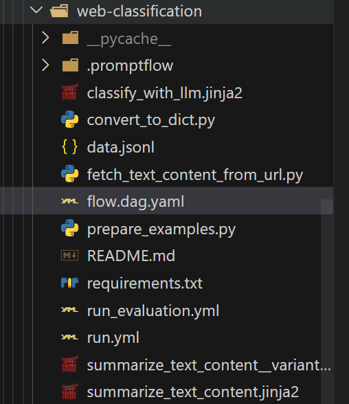
In order to run this specific flow, you need to install its requirements first.
pip install -r requirements.txt
Understand the flow yaml#
The entry file of a flow directory is flow.dag.yaml which describes the DAG(Directed Acyclic Graph) of a flow. Below is a sample of flow DAG:
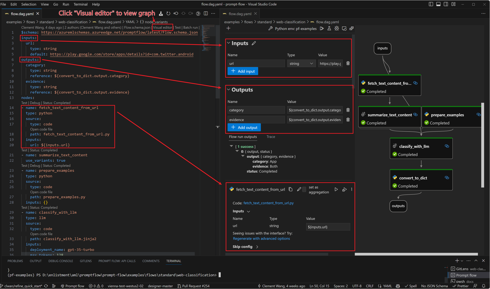
This graph is rendered by VS Code extension which will be introduced in the next section.
Using VS Code Extension to visualize the flow#
Note: Prompt flow VS Code Extension is highly recommended for flow development and debugging.
Prerequisites for VS Code extension.
Install latest stable version of VS Code
Install VS Code Python extension
Select python interpreter
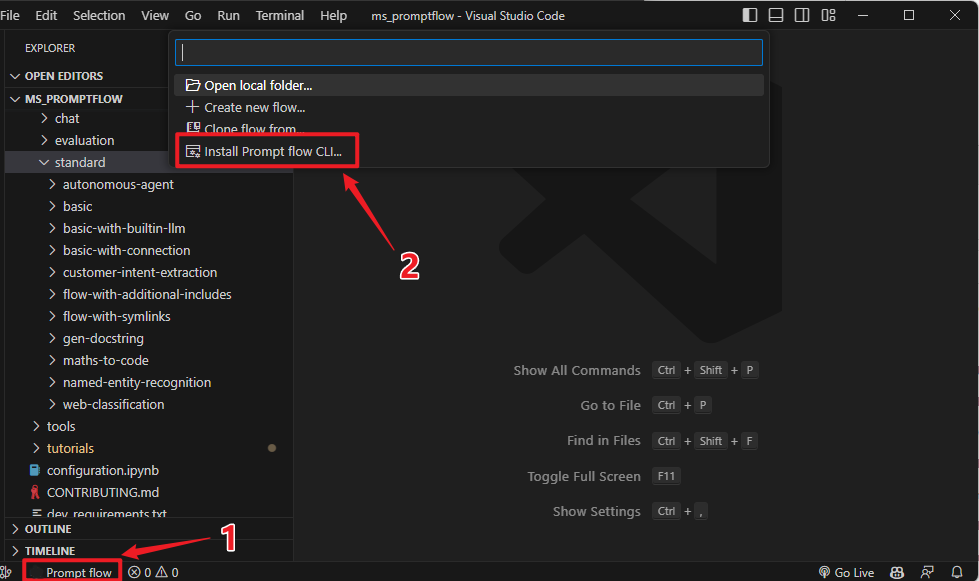 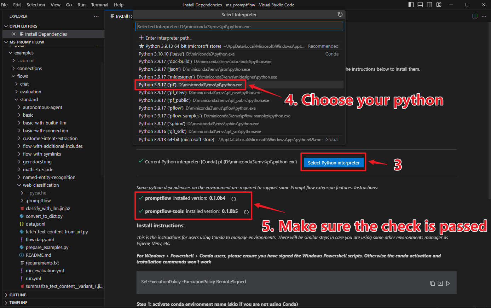
Open dag in vscode. You can open the
flow.dag.yamlas yaml file, or you can also open it invisual editor. 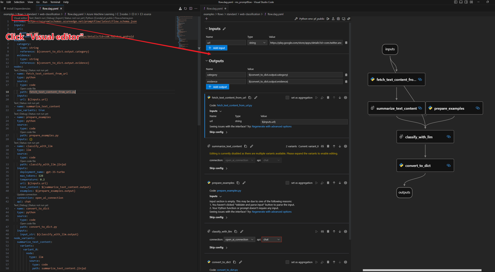
Develop and test your flow#
How to edit the flow#
To test your flow with varying input data, you have the option to modify the default input. If you are well-versed with the structure, you may also add or remove nodes to alter the flow’s arrangement.
$schema: https://azuremlschemas.azureedge.net/promptflow/latest/Flow.schema.json
inputs:
url:
type: string
# change the default value of input url here
default: https://play.google.com/store/apps/details?id=com.twitter.android
...
See more details of this topic in Develop a flow.
Create necessary connections#
Note
If you are using WSL or other OS without default keyring storage backend, you may encounter StoreConnectionEncryptionKeyError, please refer to FAQ for the solutions.
The connection helps securely store and manage secret keys or other sensitive credentials required for interacting with LLM and other external tools for example Azure Content Safety.
The sample flow web-classification uses connection open_ai_connection inside, e.g. classify_with_llm node needs to talk to llm using the connection.
We need to set up the connection if we haven’t added it before. Once created, the connection will be stored in local db and can be used in any flow.
Firstly we need a connection yaml file connection.yaml:
If you are using Azure Open AI, prepare your resource follow with this instruction and get your api_key if you don’t have one.
$schema: https://azuremlschemas.azureedge.net/promptflow/latest/AzureOpenAIConnection.schema.json
name: open_ai_connection
type: azure_open_ai
api_key: <test_key>
api_base: <test_base>
api_type: azure
api_version: <test_version>
If you are using OpenAI, sign up account via OpenAI website, login and find personal API key, then use this yaml:
$schema: https://azuremlschemas.azureedge.net/promptflow/latest/OpenAIConnection.schema.json
name: open_ai_connection
type: open_ai
api_key: "<user-input>"
organization: "" # optional
Then we can use CLI command to create the connection.
pf connection create -f connection.yaml
More command details can be found in CLI reference.
In SDK, connections can be created and managed with PFClient.
from promptflow import PFClient
from promptflow.entities import AzureOpenAIConnection
# PFClient can help manage your runs and connections.
pf = PFClient()
try:
conn_name = "open_ai_connection"
conn = pf.connections.get(name=conn_name)
print("using existing connection")
except:
connection = AzureOpenAIConnection(
name=conn_name,
api_key="<test_key>",
api_base="<test_base>",
api_type="azure",
api_version="<test_version>",
)
# use this if you have an existing OpenAI account
# from promptflow.entities import OpenAIConnection
# connection = OpenAIConnection(
# name=conn_name,
# api_key="<user-input>",
# )
conn = pf.connections.create_or_update(connection)
print("successfully created connection")
print(conn)
Click the promptflow icon to enter promptflow control panel
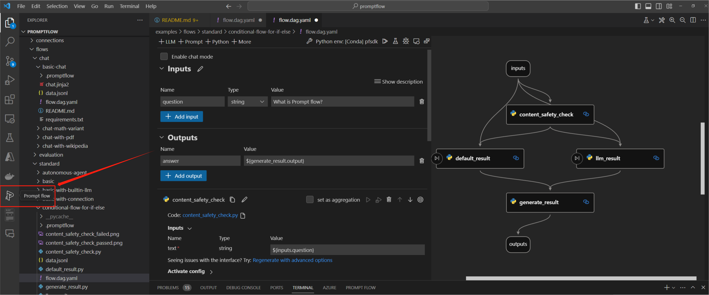
Create your connection.
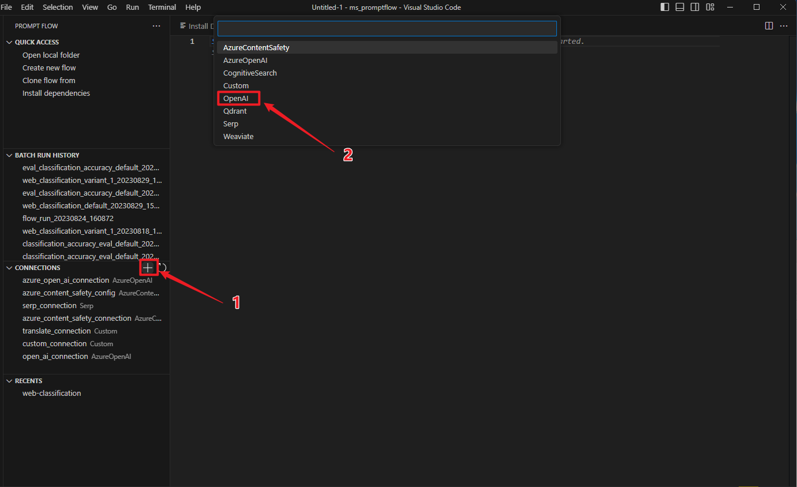
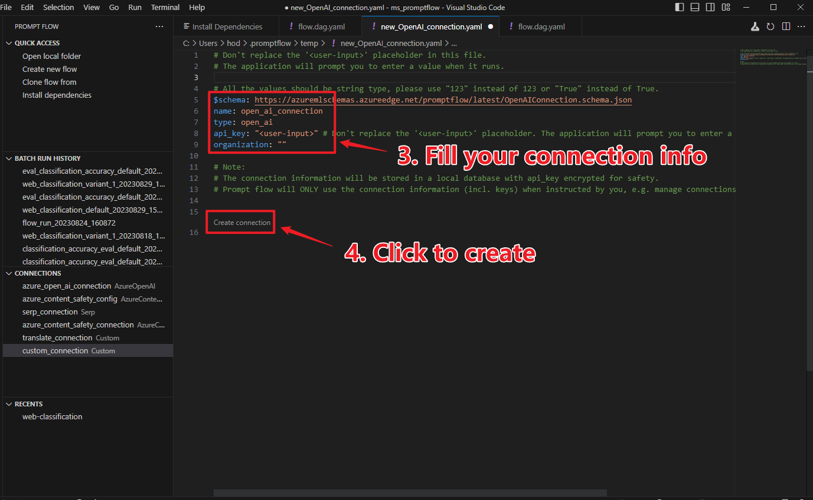
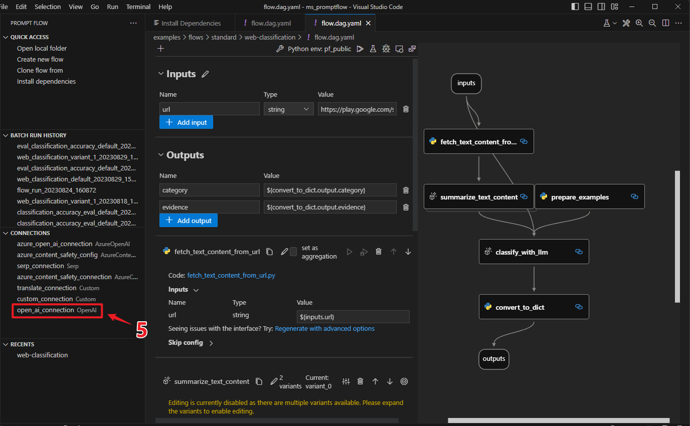
Learn more on more actions like delete connection in: Manage connections.
Test the flow#
Note
Testing flow will NOT create a batch run record, therefore it’s unable to use commands like pf run show-details to get the run information. If you want to persist the run record, see Run and evaluate a flow
Assuming you are in working directory promptflow/examples/flows/standard/
Change the default input to the value you want to test.
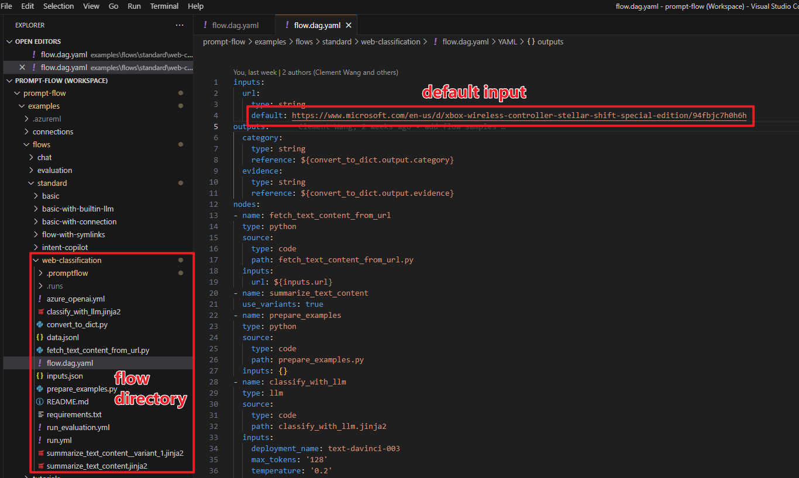
pf flow test --flow web-classification # "web-classification" is the directory name
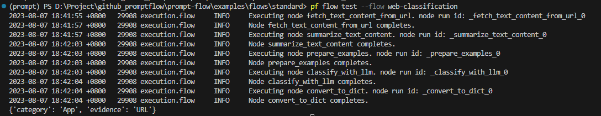
The return value of test function is the flow/node outputs.
from promptflow import PFClient
pf = PFClient()
flow_path = "web-classification" # "web-classification" is the directory name
# Test flow
flow_inputs = {"url": "https://www.youtube.com/watch?v=o5ZQyXaAv1g", "answer": "Channel", "evidence": "Url"} # The inputs of the flow.
flow_result = pf.test(flow=flow_path, inputs=inputs)
print(f"Flow outputs: {flow_result}")
# Test node in the flow
node_name = "fetch_text_content_from_url" # The node name in the flow.
node_inputs = {"url": "https://www.youtube.com/watch?v=o5ZQyXaAv1g"} # The inputs of the node.
node_result = pf.test(flow=flow_path, inputs=node_inputs, node=node_name)
print(f"Node outputs: {node_result}")
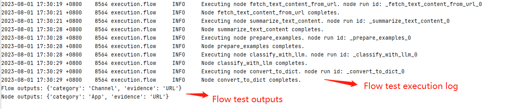
Use the code lens action on the top of the yaml editor to trigger flow test 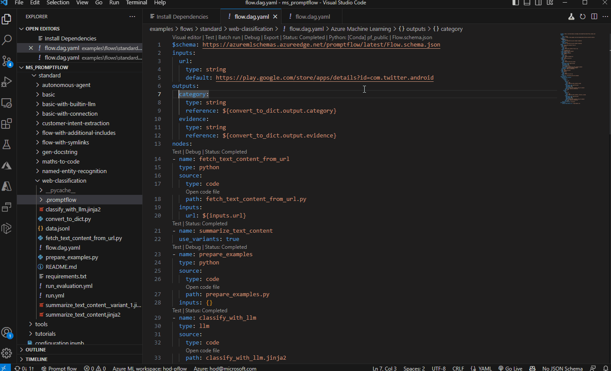
Click the run flow button on the top of the visual editor to trigger flow test. 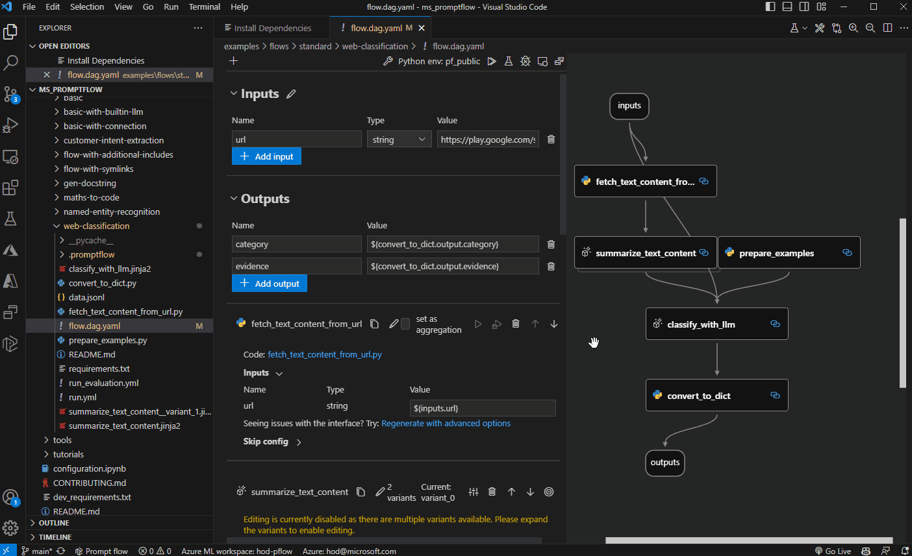
See more details of this topic in Initialize and test a flow.
Next steps#
Learn more on how to:
Develop a flow: details on how to develop a flow by writing a flow yaml from scratch.
Initialize and test a flow: details on how develop a flow from scratch or existing code.
Add conditional control to a flow: how to use activate config to add conditional control to a flow.
Run and evaluate a flow: run and evaluate the flow using multi line data file.
Deploy a flow: how to deploy the flow as a web app.
Manage connections: how to manage the endpoints/secrets information to access external services including LLMs.
Prompt flow in Azure AI: run and evaluate flow in Azure AI where you can collaborate with team better.
And you can also check our examples, especially:
Getting started with prompt flow: the notebook covering the python sdk experience for sample introduced in this doc.
Tutorial: Chat with PDF: An end-to-end tutorial on how to build a high quality chat application with prompt flow, including flow development and evaluation with metrics.